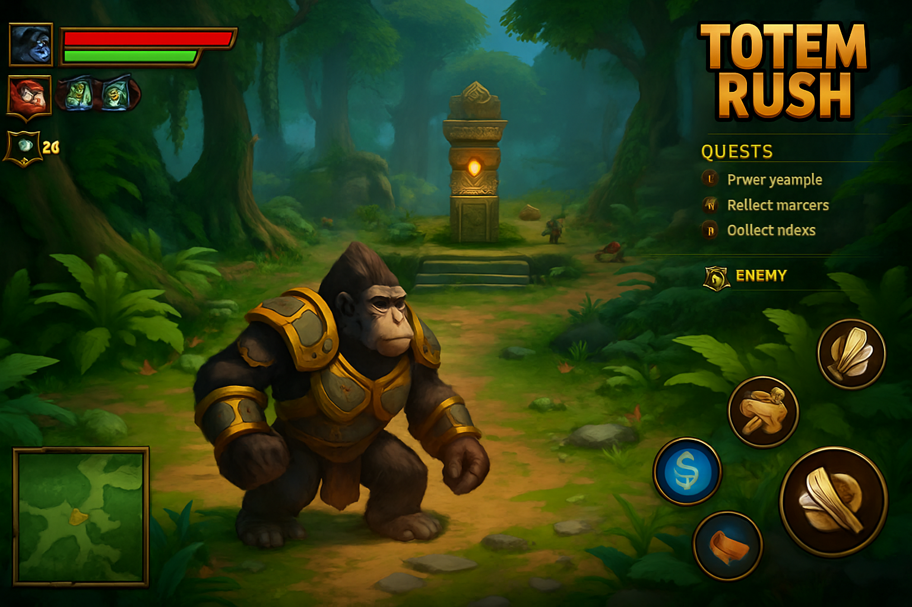
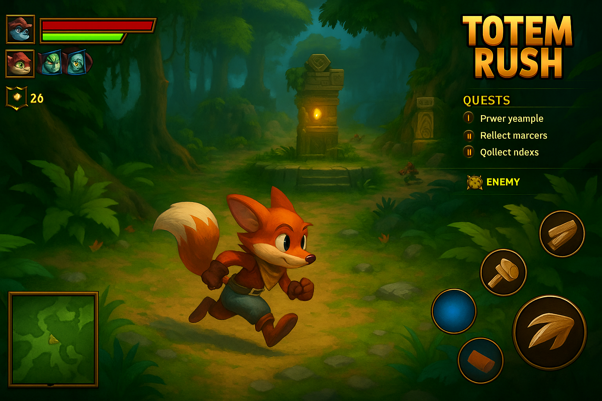

Sistema de Progressão
Totens de experiência: Ganha XP completando missões e achando relíquias.
Árvore de habilidades: Cada personagem tem sua própria.
Itens especiais: Equipamentos, skins, relíquias que mudam habilidades.
Ambientes de Gameplay
Floresta Inicial: Introdução às habilidades e história.
Ruínas Subterrâneas: Foco em exploração com Lupy e Zaru.
Templo do Vento: Mistérios e puzzles mágicos com Nyra.
Vila Congelada: Batalhas intensas e obstáculos de gelo.
Selva Quebrada: Nível final com chefes e elementos de todos os mapas.
Mecânicas Principais
Explorar mapas, ajudar tribos, derrotar chefes e recuperar relíquias antigas.
Elementos do cenário que ativam poderes, armadilhas, portais e buffs.
Itens secretos espalhados pelos mapas, com recompensas únicas.
Cada personagem desbloqueia novos movimentos com o tempo.